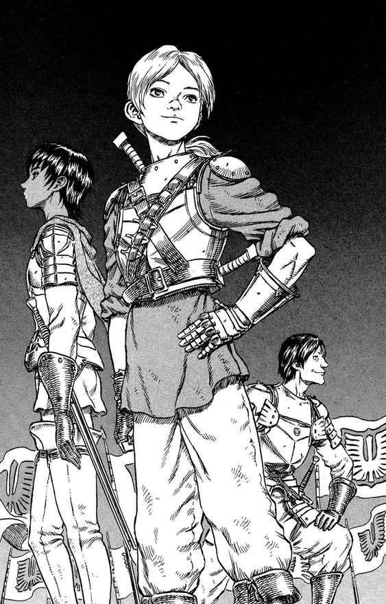

Judeau

Judeau, é descrito como um homem jovem e bonito de estatura média com um porte atlético magro. Ele tem o cabelo louro, geralmente amarrado em um rabo de cavalo baixo, e seus olhos são verdes. Ele raramente é visto sem um sorriso no rosto, e tem 6 facas amarradas a sua armadura .
Personalidade
Personalidade
Judeau, é retratado como um cara otimista , bem como um amigo carinhoso e leal, ele amou Casca secretamente e cuja felicidade que ele consistentemente colocava antes de sua própria. Ele também foi confidente ao Guts e, possivelmente, seu amigo mais próximo dentro dos falcões, ao lado de Griffith e Rickert e Pippin. Ele também foi muito paciente, especialmente com Guts, quando Guts bem ainda era novo para O Bando Falcão ,ele não foi muito bem recebido por alguns membros do bando . Em tempos de descanso, ele gostava de reunir seus amigos mais próximos em torno de uma fogueira e jogava seu alaúde.
História